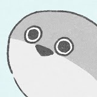

あんちょび
自己紹介
2004年1月18日生まれ（20歳）
大学生の頃からウェブサイト制作に興味を持ち、
萩野研の友人とウェブサイトを運営する中でIT技術の楽しさに目覚めました。
現在は、慶應義塾大学経済学部と村井純研究室に在籍し、 幅広い分野で学びを深めています。
今後は、学際的なアプローチを活かし、 医療とIT技術の融合による新たな価値創造を目指しています。
特に、分散システムの一つであるブロックチェーン技術を活用した医療統計の管理や、
前の大学で専攻した疫学研究への応用に強い関心を持っています。
主な興味・研究分野は、ブロックチェーン技術を応用したフィンテック、ゼロトラスト（ZT）セキュリティ、
核医学、疫学、そしてハンセン病です。これらの分野を横断的に研究し、新しい知見の創出を目指しています。
現在の活動としては、大学でTeaching Assistantを務める傍ら、 個人でウェブサイトの運営や不動産業にも携わっています。
多岐にわたる活動を通じて、 他分野への応用に焦点を当てた研究を進めています。
研究内容
現在の研究テーマ：
- あんちょびコインの実装
- pklockの実用化に向けた引継ぎ
- ハッシュ関数を用いた不動産登記システムの提案
これらの研究を通じて、より信頼性の高い分散システムの開発に貢献することを目指しています。
主な出版物
"Enhancing Interpretability in Large Language Models"
著者: 山田 太郎, 鈴木 花子
掲載誌: Journal of Artificial Intelligence, 2023
"Ethical Considerations in Multimodal AI Systems"
著者: 山田 太郎, 佐藤 次郎, 田中 三郎
掲載誌: AI Ethics Quarterly, 2022
研究成果
"Identifying the transmission route of leprosy-causing Mycobacterium leprae and vector"
内容: ハンセン病の原因菌である\"らい菌\"と媒介生物の感染経路を疫学調査の症例対照研究による特定
掲載誌: 未定、いつかウェブサイト内に特設ページを設けます
連絡先
Email: anchovy@sfc.wide.ad.jp
研究室: 慶応義塾大学 SFC Δ館 村井純研究室 中村修合同研究会 Delight